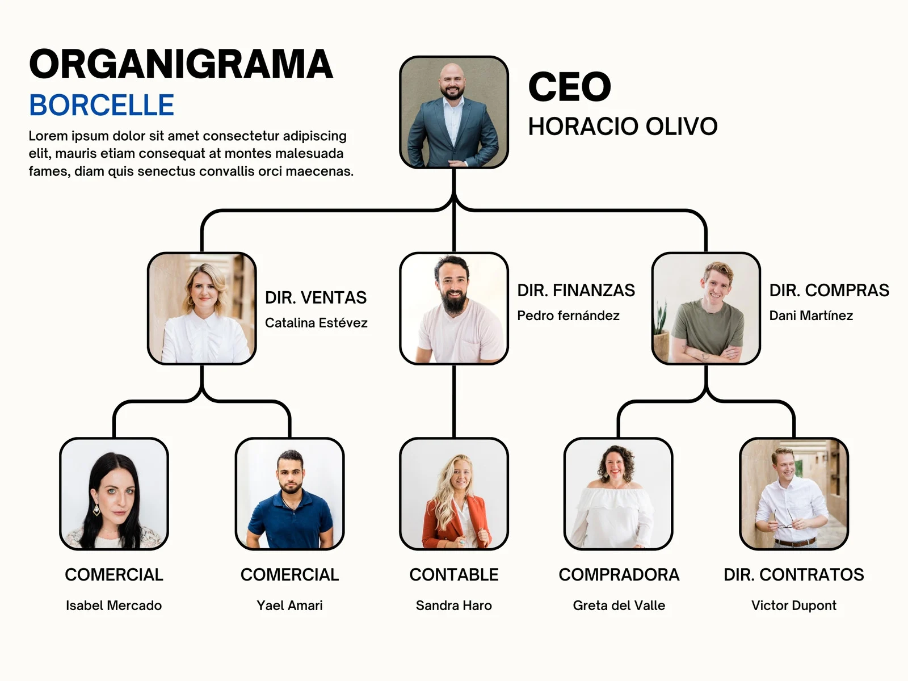

Sobre Nosotros
Nomadas Por el Mundo Somos una empresa de viajes y turismo nacional einternacional, siendo su principal fortaleza un servicio personalizado pre y post venta. Una empresa familiar que se creó con la estructura y los valores tradicionales del sector, abocándose al servicio personalizado, al detalle de cada experiencia y a la excelencia en todos los productos. Nos adaptamosa los nuevos tiempos que obligan a ofrecer una amplia variedad de productos y servicios por medio de la web, creando una plataforma que nos permita mostrar, asesorar y vender desde nuestra página como también desde las redes sociales para lograr operaciones inmediatas, confiables y poder aprovechar y adquirir un amplio abanico de opciones que van desde ofertas de último momento hasta paquetes de viajes personalizados. Hoy nos volvemos a renovar para continuar con el compromiso de superarnos día a día, de mejorar cualquier presupuesto y de no lograrlo, brindarle un asesoramiento gratuito sobre su elección. Brindamos no solo una plataforma virtual sino también una estructura física, compuesta por un gran grupo de gente idónea en el sector, para su mayor tranquilidad, porque siempre que nos necesite vamos a estar sea por teléfono, por mail o “cara a cara” en nuestras oficinas, operando en 6 países. Conservamos lo mejor de la gestión anterior, el respaldo, la seriedad, el conocimiento y el servicio personalizado, incorporando tecnología, calidad y alcance internacional al servicio de tus viajes. Todo esto nos permite mejorar la experiencia desde el momento de la consulta y planificación, hasta tu regreso. Confía en nosotros, garantizamos tus viajes al 100%.
